一个 GPT，写两遍
同一个 GPT-2 小模型，左边 PyTorch，右边 LibTorch (C++)。文件名、类名、函数名、打印格式一一对应；同一个随机种子在两边抽出逐位相同的权重，训练出几乎重合的 loss 曲线。本站每一行代码都直接取自仓库源码，每一个数字都来自工具实测的 JSON。
11
对双胞胎文件58
个 @twin 块147
个按语义对齐的 @step 步骤288 = 288
训练步数 Python = C++（旧版 85 ≠ 75）
1.9e-06
逐步训练 loss 最大误差1.7e-06
同种子初始化 + 前向 logits 最大误差课程
| # | 课程 | 块 | 步骤 | Python 行 | C++ 行 | C++/Py | 涉及的 API 差异 |
|---|---|---|---|---|---|---|---|
| 00 | 统一打印：两边输出逐行可比 | 6 | 11 | 26 | 46 | 1.77× | dtype item slice |
| 00 | 共享配置：同一份 presets.json | 5 | 8 | 51 | 94 | 1.84× | |
| 00 | GPT-2 分词器：同一份词表、同一条正则 | 1 | 3 | 18 | 61 | 3.39× | |
| 01 | 张量：创建、形状、索引、广播 | 6 | 14 | 46 | 56 | 1.22× | dtype index shape slice |
| 02 | 自动求导：梯度、no_grad、手写 SGD | 4 | 15 | 51 | 64 | 1.25× | grad item no_grad requires_grad shape |
| 03 | 模块：GELU、LayerNorm、FeedForward | 5 | 11 | 54 | 92 | 1.70× | TORCH_MODULE module register_module register_parameter sequential shape |
| 04 | 因果多头自注意力 | 3 | 12 | 81 | 113 | 1.40× | TORCH_MODULE dtype index module register_buffer register_module shape slice |
| 05 | GPT 模型与贪心生成 | 4 | 13 | 78 | 126 | 1.62× | TORCH_MODULE arrow dtype index module no_grad register_module replace_module sequential slice |
| 06a | 数据管线：分词、切分、滑窗、batch | 7 | 15 | 66 | 73 | 1.11× | dtype generator index slice |
| 06b | 预训练：交叉熵、AdamW、loss 曲线 | 6 | 18 | 83 | 110 | 1.33× | arrow functional generator item no_grad optim |
| 07 | 微调：把 GPT 变成垃圾短信分类器 | 11 | 27 | 129 | 189 | 1.47× | arrow dtype functional generator index item no_grad optim shape slice |
模型结构

概念映射：PyTorch ⇄ LibTorch

怎么读
- 每课一个页面，左右两栏按
@twin块对齐；块内按@step语义锚点切成若干步，一步一行：同一行左边是 Python、右边是 C++，顶部对齐，短的一侧留空（斜线格）。不做逐行 diff——两种语言语法差太多，按文本相似度只能对上函数签名。 - 每一步上方是这一步做什么，以及两边写法为什么不同；黄色 = API 差异（悬停看解释）。
- 页面末尾是两边程序的真实输出，逐行对照。
- 实测结果：parity 误差、训练曲线叠加图、benchmark。